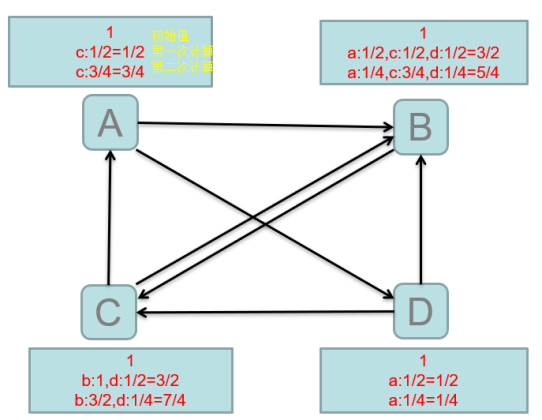

1. src
1.1 搜索引擎具有巨大的作用
1.1.1 人不可能记得清具体url网址，现查网址清单太麻烦
1.1.2 是互联网的入口，是互联网的门户。是访问互联网的第一步，搜索引擎最先遇到大数据问题，可以根据这些数据做DM、用户画像、精准推广。
1.2 超链接在互联网中的作用
1.2.1 用来在不同页面通信，维护不同页面的关系
1.3 什么是pagerank
1.3.1 PageRank是Google提出的算法，用于衡量特定网页相对于搜索引擎索引中的其他网页而言的重要程度，是将链接价值概念作为排名因素的算法。重要程序就是权重，可以按权重排序
1.3.2 是Google创始人拉里·佩奇和谢尔盖·布林于1997年创造的。谷歌的第一桶金，用户搜了之后第一页前几个就是想要的东西，划时代意义
2. comprehending
2.1 使用一个页面的经过恶意检测的入链的票面值的和来表征页面的重要程度
2.1.1 本质是通过一个页面的出链决定票面值，通过入链决定pr值，通过递归使pr趋于稳定
2.2 concept
2.2.1 出链，入链
{1} PageRank让链接来“投票“，到一个页面的超链接：入链相当于对该页投一票。
{2} 如果一个页面A中有B页面的超链接，B的重要程度就会增加一点，就相当于A对B投了一票。这个链接是A的出链，B的入链
2.2.2 入链数量
{1} 如果一个页面节点接收到的其他网页指向的入链数量越多，那么这个页面越重要。
{2} 很多网站互相设友情链接，就是为了提高搜索排名 如果恶意的注册很多小网站，然后设出链会使某网站排名提高 不公平竞争
2.2.3 入链质量
{1} 指向页面A的入链质量不同，质量高的页面会通过链接向其他页面传递更多的权重。所以越是质量高的页面指向页面A，则页面A越重要。
{2} 网站的起始权重值是相同的，根据入链结果不同产生权重值。但这样会导致不公平竞争 设置完初始权重值之后会检验给当前网址投票的网站，如果这些网站入链很少，就降低其权重
2.2.4 票面值：当前PR值/出链数量，比如初始值为1，出链数量为2。则票面值为1/2。比如上图的A，初始值为1，有2个出链，所以票面值为1/2，A给B和D投票就是给B和D的PR值分别加1/2。而A投2票之后PR值变为0，第一轮结束时的PR值来源于其他节点的投票。第二轮开始后，A的1/2又会变成2个1/4投给BD，A此时的PR又为0，依靠C给的3/4变成3/4
{1} 票面值的和就是PR
2.3 PageRank的计算

2.3.1 PR值的计算会有好几轮，轮之间通过pr值关联。每次PR值就是接收到的入链的票面值的和。
2.3.2 上图：根据出链进行投票，得到第2次(第1次是初始)PR值。然后继续进行一轮投票，得到第3次PR值，会发现2轮和1轮、3轮和2轮之间的差值越来越小，也就越来越稳定。最后会趋向一个稳定值。差值足够小后就可以按序显示给用户了。
{1} 计算次数越多，轮轮之间的差越稳定，达到既定的标准，每个页面的PR也就得到了。PR就是权重值
2.3.3 迭代计算（收敛）
{1} google的PR算法给每个页面设相同的初始PR值 = 1
{2} Google不断的重复计算每个页面的PageRank。那么经过不断的重复计算，这些页面的PR值会趋向于稳定，也就是收敛的状态。
{3} 在具体企业应用中怎么样确定收敛标准？
[1] 在时间和差值上找个平衡。次数越多，时间越久，差值越小。
[2] 每个页面的PR值和上一次计算的PR相等 这不可能
(1) 设定一个差值指标（0.0001）。当所有页面和上一次计算的PR差值平均小于该标准时，则收敛。或者
(2) 设定一个百分比（99%），当99%的页面和上一次计算的PR相等
{4} pagerandk的计算和迭代计算必须要快，时效性要强，不然等算完网站都倒闭了。
2.3.4 异常情况
{1} 总体上，一个节点出链越少，其投票的质量越高。入链越少，投票质量越低
{2} 只出不入：初始为1，第一轮之后就成了0，因为没人给它投票。
[1] 指向很多页面但没页面指向它
{3} 只入不出：PR会很高
{4} 有些时候用户会直接访问网页
[1] 如果页面之间没有超链接，那互联网就不是互联网了，不过搜索引擎还是要考虑上面的情况
2.3.5 修正PageRank的计算公式，增加阻尼系数
{1} 在简单公式的基础上增加了阻尼系数（damping factor）d，一般取值d=0.85。
[1] google通过历史数据得出，一个人85%的情况会通过一个页面访问另一个页面。15%会直接输入url访问。
{2} 完整的PR计算公式
[1] 参数
(1) d：阻尼系数
(2) M(i)：指向i的页面集合，对i有投票权的页面集合
(3) L(j)：j页面的出链数
(4) PR(pj)：j页面的PR值
(5) n：所有页面数
[2] 结果
(1) (指向一个页面的所有页面的(PR值和出链数的商) 的和) * d 加上 (1 - d) /n
(2) 结果PR(Pi) 就是第i页的权重值，也就是最终票面值。(PR值和出链数的商)就是票面值
(3) 只出不进时，票面值为0，所以要加上个(1 - d) /n 用来保证结果不为0。(1 - d) /n是个很小的数 只出不入也会有PR值，也会被搜到。
(4) 只进不出，无影响
3. usage
3.1 环境
3.1.1 Hadoop-2.5.2
3.1.2 四台主机
3.1.3 两台NN的HA
3.1.4 两台RM的HA
3.1.5 离线计算框架MapReduce
3.2 BD的运算肯定都有循环，先搞清楚循环体是什么
3.2.1 计算入链的源页面的PR值，然后判断跟上一次的差是否符合条件
3.3 note
3.3.1 全局计数器，通过conf.setInt(“key”,value)。通过配置文件在map和reduce之间传值
{1} 需要用循环次数来确定
[1] 是否是第一次循环，来给数据中页面的PR赋初始值
[2] 给reducer的输出文件提供命名的编号
3.4 数据
3.5 Mapper
3.5.1 将一行记录解析为页面关系、PR值、给每个出链节点的投票票面值
3.6 Reducer
3.6.1 根据页面关系和上次PR值算出这次的PR。并比较轮之间的差，直到符合收敛标准